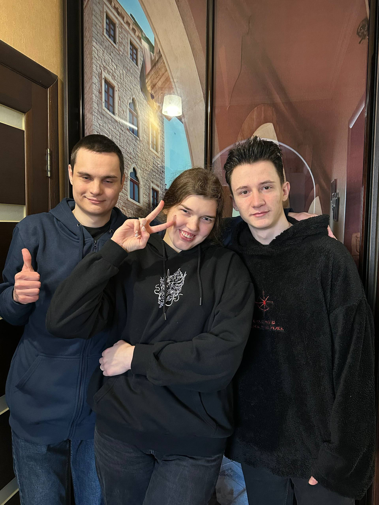

Про мене
Я професійний backend/fullstack розробник з 4 роками професійного досвіду, програмуючи з 13 років. Я люблю проєктувати системи, що піддаються читанню, тестуванню та масштабуванню — навіть з хаотичними вимогами.
Я найсильніший у C# / ASP.NET та SQL Server, але я втілював у життя рішення використовуючи Java, Python, і Dart. Я впевнено почуваюся з Linux середовищами, процесами DevOps, розгортанням, що базується на Docker, та складними мережевими сетапами (включно з IPv6).
Увага: Дизайн “лаби” є навмисним — проста розмітка, видимі якорі, багатосторінковість, та олдскульні вайби.
Навички
- Бекенд: C#, ASP.NET, Web APIs, аутентифікація, кешування, фонові процеси
- Дані: SQL Server (дизайн, швидкодія, індексування), міграції, звіти
- Веб: HTML/CSS/JS (vanilla), трішки jQuery, основи UX
- Системи: Linux, Docker, DevOps процеси, мережництво (IPv6), усунення проблем
- Екстра: Основи вбудованих систем, пайка/возня з "залізом"
Успіх
- Розробив складну багатомодульну систему: чіткі межі, послідовні контракти, передбачувані розгортання.
- Допомагав командам зменшувати «таємниці на проді» за допомогою журналів/метрик і нудних, але потужних Практик.
- Насолоджуюся створенням вбудованих інструментів, які економлять час і запобігають людським помилкам.
Зовнішні посилання на деякі з моїх проєктів: Креативні лаби з 1 курсу Розклад для універу Шкільна презентація
Медіа
Моя команда:

Найбільший командний проєкт: Darkness Survival
YouTube відео з компанії, чисто щоб показати тег <iframe> у дії